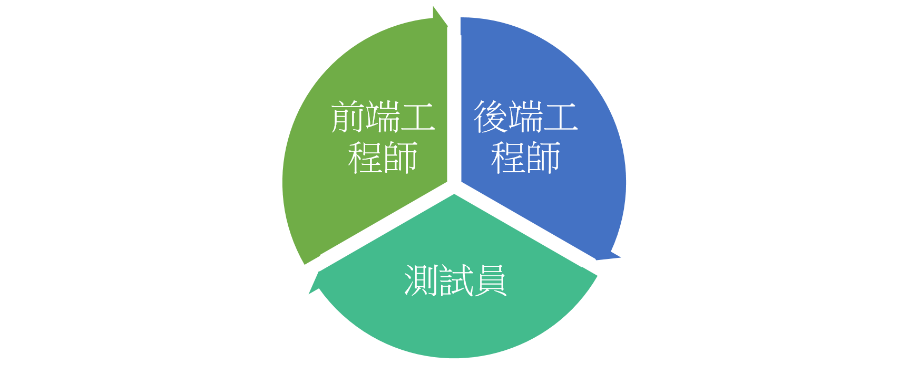
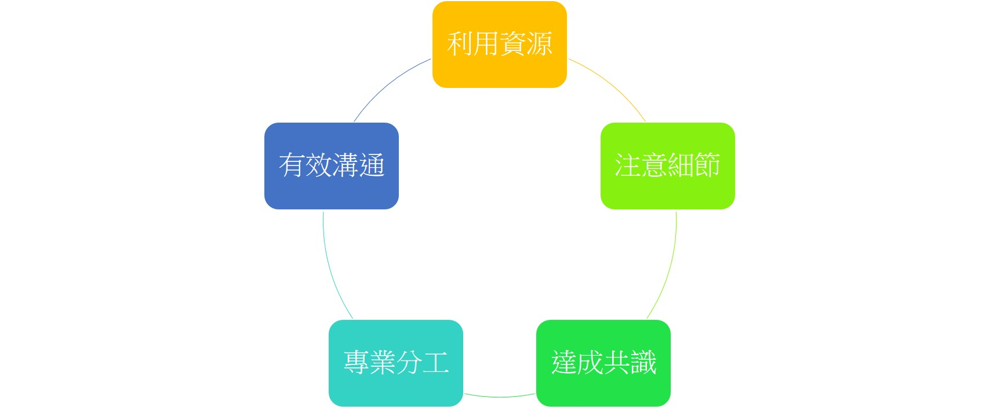
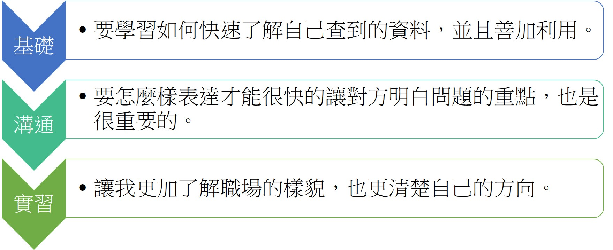

Contact

元智大學
資訊管理學系
洪瑟君
1031712
love613cherry@yahoo.com

Dimerco
CRP MIS
我的工作是協助開發翻新舊有的系統，主管會挑幾支小的程式，讓我們分工開發，開發完成後再由我們進行測試；測試完成後，確認沒有任何Bug，在交給工程師整合到主程式中。除了開發之外，我們也會根據系統的規格，撰寫相關的測試Case及在公司的測試站中，對merge後的版本進行測試，在測試Case中詳述Bug，在交由其他工程師修改錯誤。
測試：分為黑箱測試和白箱測試；而我做的就是黑箱測試，一開始會照著別人寫好的測試Case，對特定頁面進行測試；再來就必須根據規格自行撰寫測試的Case，撰寫完後交給主管檢查並且針對主管交付的工作，從不同測試站對不同的版本進行測試，確保網站在正式上線的時候沒有錯誤。
前端(UI)：就是User Interface的縮寫，指的是用戶操作的介面；UI設計主要指界面的樣式及美觀程度。而使用上，包含人機互動、操作邏輯、介面美觀的整體設計也是十分重要的。
後端(API)：為Application Programming Interface的簡稱，又稱為應用編程介面其主要目的是讓應用程式開發人員得以呼叫一組常式功能，而無須考慮其底層的原始碼為何、或理解其內部工作機制的細節。API本身是抽象的，它僅定義了一個介面，而不涉及應用程式在實際實現過程中的具體操作。
實習扮演的三種角色
在實習中，讓我對程式工具有更多的了解，也懂得更加利用手中的資源:從其他工程師身上，也學到很多寫程式的小技巧，怎麼寫能更精簡、更完整，必須要注意到甚麼細節，也要確保將來利於他人維護程式。
我也發現到分工的重要性，每個工程師都有自己擅長的領域，要清楚的分工即將每個人都放在自己擅長的部份才不會造成人力的浪費，有了好的分工才能產生最大效益。
除了要完成各自的工作，還要能夠有效的溝通才能夠達到共識；雖然專業知識很重要，但是溝通也是一大重點，要怎麼樣才能將自己的想法表達清楚，讓他人明白也是很重要的一件事。
實習一開始的訓練課程跟在學校上課很像，只是多了很多新的東西及實作經驗，公司也特別請講師來教導我們，除了讓我們學習簡單的開發熟習MVC之外，也帶我從底層深入了解程式碼的部分，讓我知道整支程式從裡到外如何運作，也會給我一些題目，讓我能夠深入去思考、實作，也會誘導我勇於發問。
在訓練課程結束後，讓我和其他人各自分工，一起完成一支程式，從UI、API到測試，都能有充分的了解，讓我能夠多元的學習，也幫助我盡快上手；如果遇到不懂的地方，除了運用手邊的資源查詢之外，工程師們也會不吝嗇的教導我，讓我對程式的內容更加清楚；經過各種練習，也能夠從中去了解自己適合或是有興趣的層面。
從2月實習到現在，真的發現自己還有許多不足，在開發上的基礎不夠扎實，對於資料庫的應用也不夠熟悉，即使利用網路查詢相關資料，也需要花一段時間理解，雖然能用的資源很多，但是還是要學習如何快速了解自己查到的資料，並且善加利用。
除了專業知識增加了不少之外，也了解到在一個團隊中，溝通及表達的重要性。在共同完成一支程式時，必須要有效的溝通，如果缺乏溝通，可能會導致前後端資料無法傳送，整合也會有很大的問題；而在表達方面，因為常常會詢問其他工程師一些專業問題，要怎麼樣表達才能很快的讓對方明白問題的重點，也是很重要的。
在經過這幾個月的實習後，讓我更加了解職場的樣貌，也更清楚自己的方向，讓我對於職場不再那麼恐懼，而校外實習的經驗，也成為我將來踏入職場中，最佳的動力。
開始實習後，發現學校學的與公司需要的真的有一段差距，建議系上可以針對公司行號愛用的開發工具，多開幾門程式設計及資料庫相關等課程，基礎的開發工具增加為必修課程；而難度較高的開發工具，可作為選修讓有興趣的同學可以自行選修。
開發工具的重要性
資訊管理學系
1031712
love613cherry@yahoo.com
CRP MIS